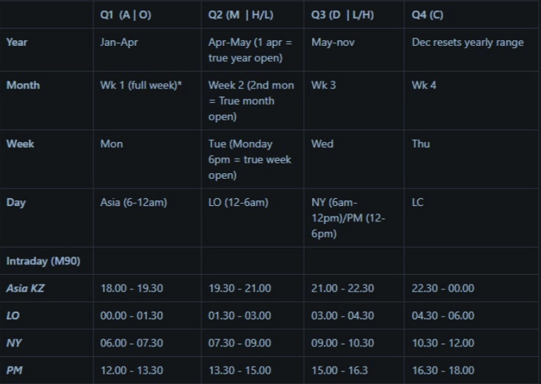
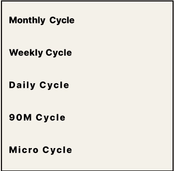
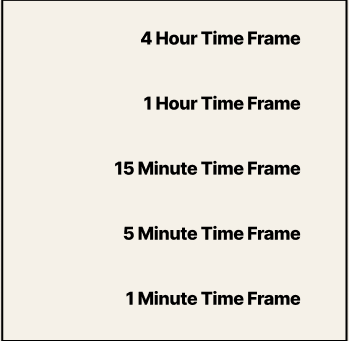
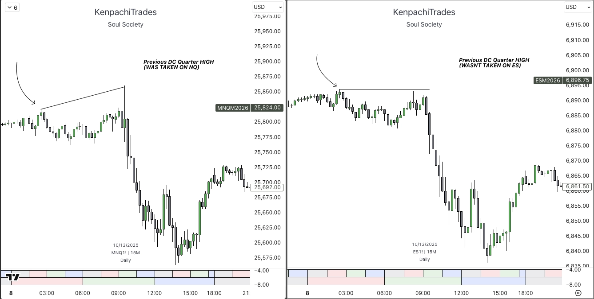
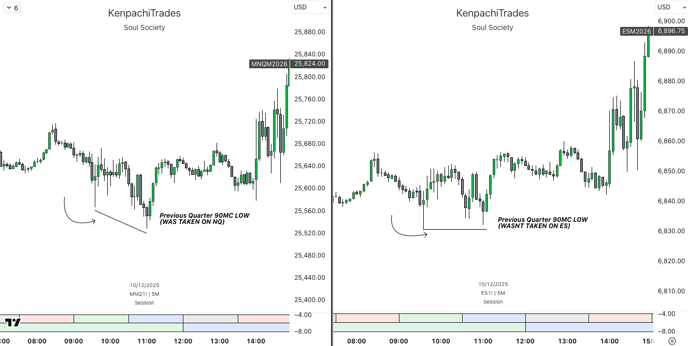

We all know the ICT concept SMT — a confirmation tool where correlated assets show divergence: one breaks the market structure (e.g., makes a new high/low), while the other fails to do so.
A SSMT is an SMT that occurs between two consecutive quarters. It is a divergence in price action between correlated assets as they transition from one time cycle to another. SSMT is that of a failure swing, where one asset breaks the high or low of the previous quarter whilst the other asset fails to do so.

It forms at every market reversal and serves as one of the primary confirmations for a reversal in price.
This is observed within: weekly, monthly, and yearly cycles to validate the high-probability reversal.


Time alignment is very important for SSMT — you must know all of them to mark up SSMT the right way.


 Join Community Free
Join Community Free